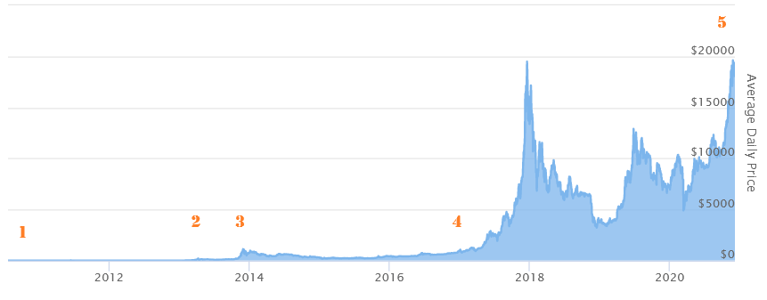
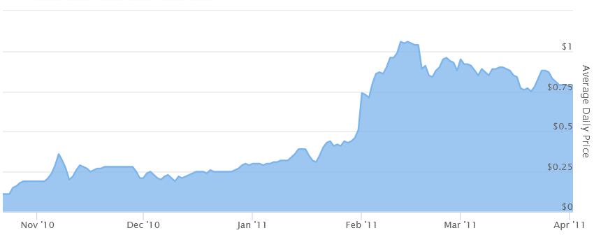
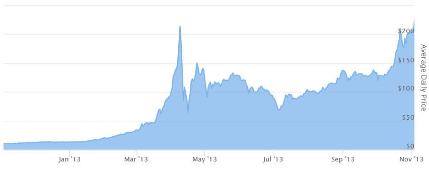
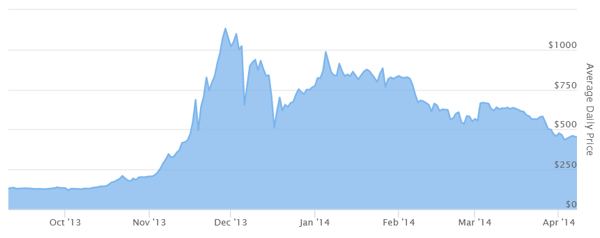
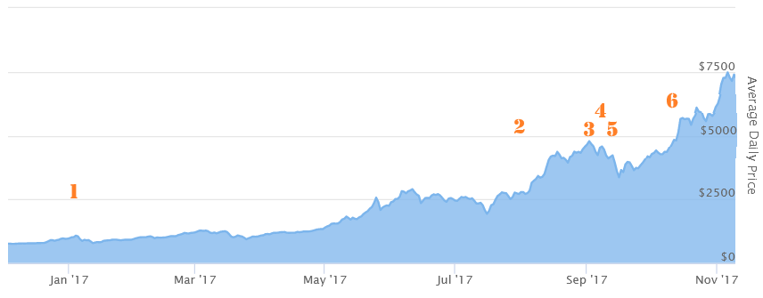
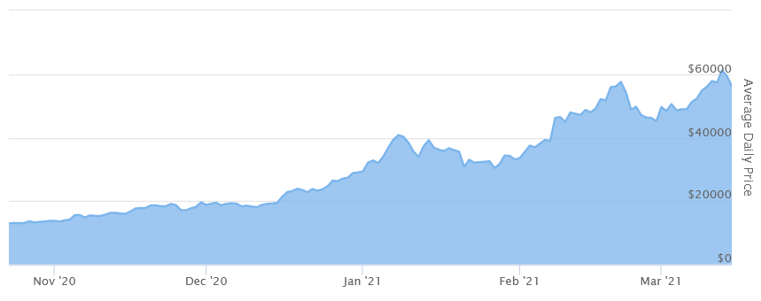

Understanding Crypto - History of BTC
A lot of people are now looking at the price of BTC, lamenting themselves that they did not buy it when it was cheaper. The price has skyrocketed and has stayed high for a great amount of time. That is the nature of these investments - you can never predict the future. And it is very easy to say that you should have bought BTC when you could, hindsight is great. But if you had the opportunity, would you do it now?
The truth of the matter is that the road to these heights was not a simple one. All the time various experts and investors claimed that it is a bubble that is going to burst any minute. Every media was filled with articles about how it is just a “fad” and how everyone will lose money soon. Yet people bought it and the price climbed.

This is a graph of the price of BTC throughout the years. You can’t see anything at the first number, as one of the most important climbs is now literally unnoticeable when looking at the big picture. That is why we cut off the end of 2020 of this chart. Otherwise you could just see a straight line that goes up like an airplane taking off. Each of the numbers is a little “chapter” in the article, with the exact moment zoomed in.
1. First Media Attention
February 9, 2011
First few years nothing really happened. Bitcoin was considered just something that only very specific technologically inclined people would like. And even then it was not used for real-life transactions, but more as something to buy and enjoy. One user auctioned 10,000 Bitcoins. He wanted to sell them all for 50 dollars. He did not find a buyer.
After a while various websites and magazines started writing articles about Bitcoin and its price slowly climbed. It took 2 years of a steady climb to finally reach a huge milestone - it was worth 1 USD on February 9, 2011. You could argue as it was the most important step, as many mainstream outlets published articles about this achievement, thus making everyone pay attention to this new cryptocurrency.

2. Cyprus Troubles
March 25, 2013
For two years the coin had been in mainstream media and had continued to climb in value, reaching 74 dollars per coin. Then something happened that was not related to technology at all: Cyprus had been plagued by financial troubles and decided to impose a 10% tax on bank deposits to comply with a bailout. This caused an understandable outrage among the citizens who felt that they were being unjustly punished for something they had no part in.

This was not the first time a country’s government has done something like this, but it was the first time when people had an alternative. Convert the money to cryptocurrencies. The government can’t touch them there. A few days after this decision the value of Bitcoin shot past 100$ and reached 200$. The interest was so high that the biggest exchange could not service all the requests and crashed. This proved cryptocurrencies to be a tool for finance decentralization and started a never-ending fight between people wanting to own their own money and governments setting up various regulations.
3. Recognition
November 29, 2013
Police arrest drug dealers that use Bitcoin, damaging its reputation. Exchanges are being closed due to uncertainty of government regulations. The future seems bleak and all signs point that the price should drop. The opposite happens: the more people learn about cryptocurrencies, the more people realize that this is something they want. A lot of people read the news and still decide not only to hold the coins, but to invest and buy more. Through all these troubles the price keeps climbing. And the governments soon help out.

On November 18th the US Senate holds a hearing on Bitcoin declaring that, in general, the aim is to support innovations, not hinder them. Two days later China declares that the people are free to participate in this market. In a week the price reaches 1200 dollars. Then, just a few days later, China changes its stance and forbids financial institutions trade in cryptocurrencies. That and technical problems with the biggest exchanges send Bitcoin into a depression. The price doesn’t reach 1000$ for three years and most people think that the bubble has finally burst.
4. The Unstoppable Climb
January 3, 2017
There was no single cataclysmic event that pushed the price over 1000$ again. President Trump had entered the office, yuan had lost its value and the whole world was wrapped in a fog of uncertainty. More and more people decided to place their funds in cryptocurrencies. When on the 3rd of January it reached 1000$ again, mass media reported it, cultivating even more interest, causing the coin to continue on its slow, but unstoppable climb. (starting with “1” in the graph.)
Everyone was waiting for the killing blow. For something to happen for the price to fall. And everyone who said it is a bubble could finally feel good about themselves. At the end of the year it seems exactly that happens. A series of blows that are devastating and should ruin all chances of recovery as all these events happen in chronological order in the span of approximately two months: Bitcoin splits into two projects. (2) China bans ICOs. (3) The head of JP Morgan calls Bitcoin a fraud. (4) China shuts down all cryptocurrency exchanges. (5) And then? Then Bitcoin ignores all that and reaches the value of 5000 USD. (6)

No excuses and no brakes. No matter what experts say, people just like the idea of a decentralized currency and are ready to gamble on its future. The price flies by 10 000$ and stops at the brink of 20 000$, never really reaching it.
5. Demand For Crypto
December 16, 2020
And that is where the price was for about four years. It was clear to everyone that the real value of the coin was somewhere between 9000 and 19 000 dollars. When it climbed higher, people blamed it on crypto fans just being hopeful. When it fell everyone said that it was “about time” for it to fall. But no matter what the media wrote and what the experts said, the price did not jump around much or fall greatly. It was a slow, constant climb.

Then on December 16th it surpassed the historical height, 20 000 USD per coin, and reached 60 000 USD already in March of 2021. It has left the whole world surprised. People have been calling it a bubble since the first real climb in 2011. Governments have been trying to regulate it and to stop the flow of money to the crypto market. Criminals have abused the coin and tried to steal it from users.
And all of that has been irrelevant. In the end the only thing keeping the price up was that people liked the idea. So what would you have done if you knew about it then? Would you have seen it for what it really is?
Thank you for reading our blog. If you have any questions about the topic or want to suggest a new one, please write an email to [email protected].